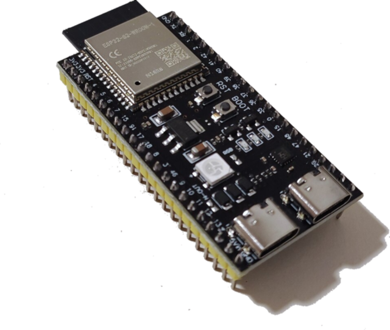
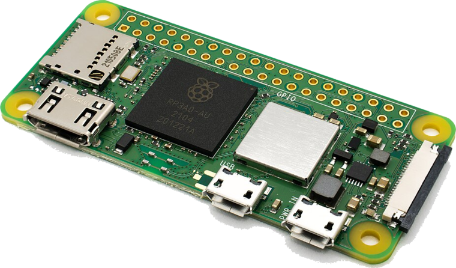
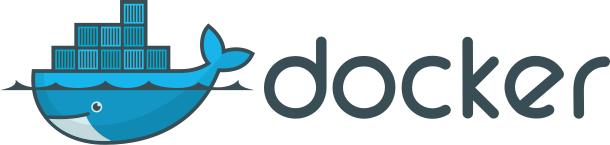
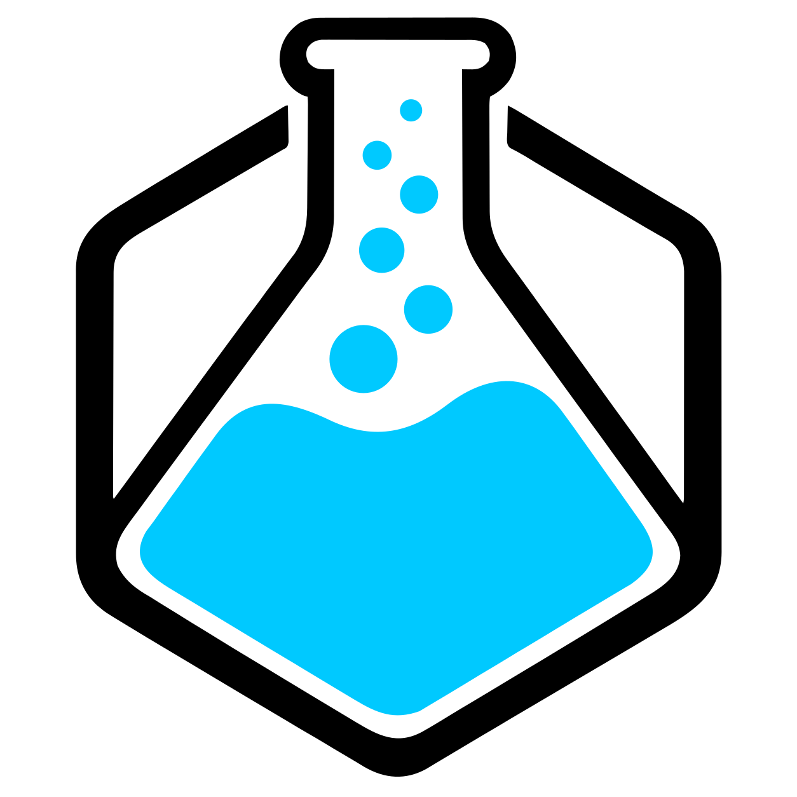

Authenticated gateway-assisted DNSSEC for IoT clients
Mode 2 · Real hardware
The ESP32 never validates DNSSEC. The Raspberry Pi gateway does, and the device trusts it only over mutual TLS.
IoT device

ESP32-S3-DevKitC-1IoT client · ESP-IDF firmware
No DNSSEC code on the device Refuses unsigned critical names No gateway: refuse, no plain DNS esp32-1 key + cert · CA cert built in Gateway

Raspberry Pi Zero 2 Wruns natively · 415 MB RAM
port 853 · checks the device certificate
DNSSEC validation · sets the AD flag
gateway key + cert · CA cert only (no ca.key) Laptop · plays the internet
ca.key never leaves the laptop
runs as a container 

port 5300 · 9 zones, 6 broken
DNSSEC keys in a Docker volume 1 · 6
mutual TLS
TLS 1.2 · over Wi-Fi
3 · 4
DNSSEC
over Wi-Fi
2
5
plain DNS
1The ESP32 opens mutual TLS. Both sides show a certificate issued by our own CA.
2stunnel hands the query to Unbound as plain DNS, on the same device.
3Unbound asks Knot and checks every signature up to its trust anchor.
4Knot returns the signed records.
5Unbound's verdict: the AD flag, or SERVFAIL with the reason (EDE).
6Back through the tunnel. The ESP32 uses the address, flags it, or refuses.